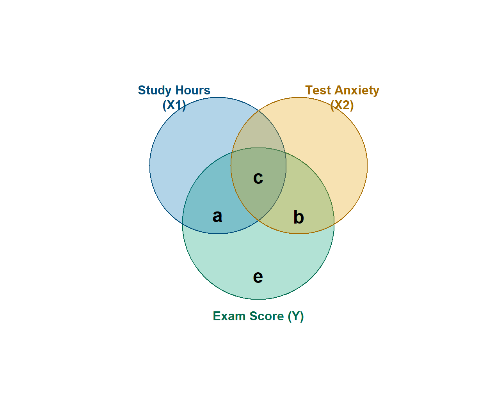
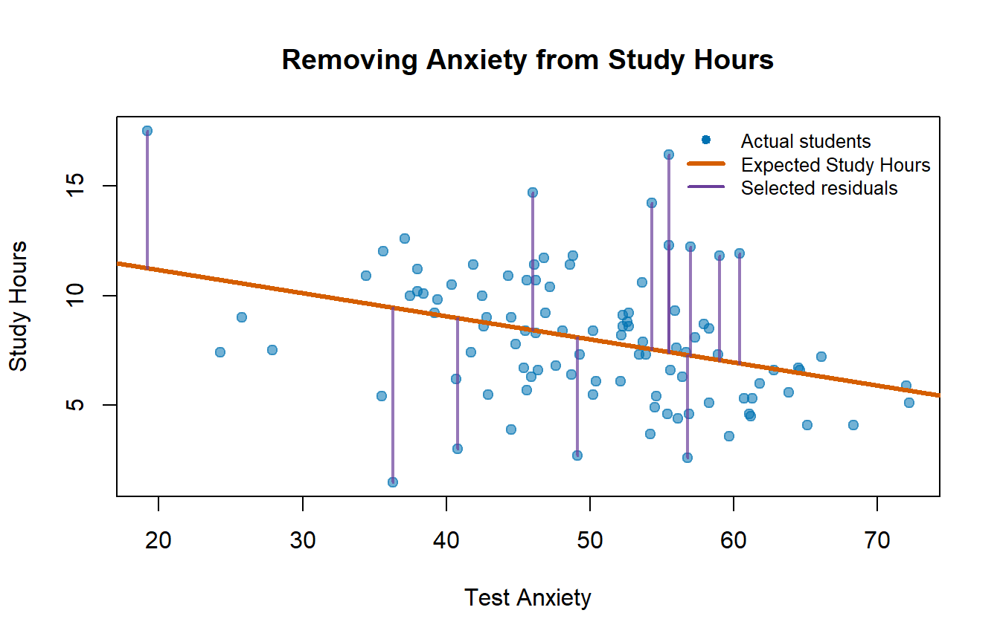
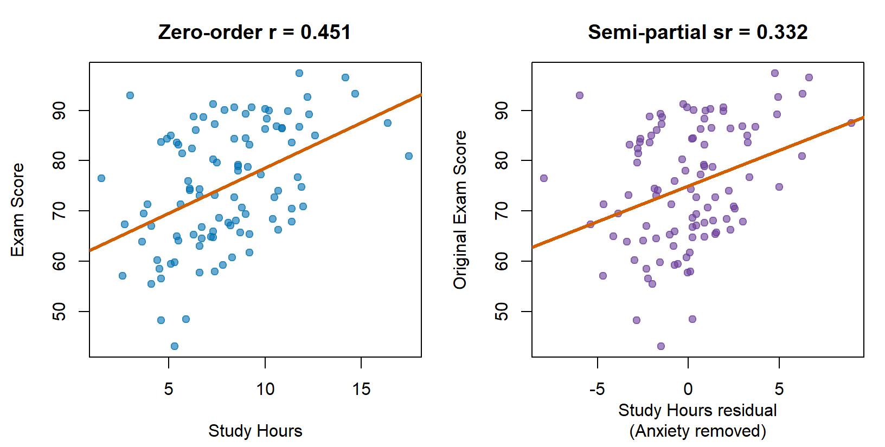

library(MASS)
set.seed(42)
n <- 100
rY1 <- 0.45 # Study Hours with Exam Score
rY2 <- -0.40 # Test Anxiety with Exam Score
r12 <- -0.35 # Study Hours with Test Anxiety
Sigma <- matrix(c(
1, rY1, rY2,
rY1, 1, r12,
rY2, r12, 1
), ncol = 3)
raw <- as.data.frame(
mvrnorm(
n,
mu = c(0, 0, 0),
Sigma = Sigma,
empirical = TRUE
)
)
colnames(raw) <- c("Exam", "StudyHours", "Anxiety")
dat <- data.frame(
Exam = round(raw$Exam * 12 + 75, 1),
StudyHours = round(raw$StudyHours * 3 + 8, 1),
Anxiety = round(raw$Anxiety * 10 + 50, 1)
)15 Statistical Control: What Are We Actually Removing?
WarningAdvanced Topic: Your Brain May File a Complaint
This is difficult material. Graduate students routinely stare at partial and semi-partial correlations as if the correlations have personally betrayed them. If this chapter requires two readings, that does not mean you are bad at statistics. It means we are removing different pieces of relationships and then giving the leftovers nearly identical names.
Keep asking three questions:
- What variable are we controlling?
- Which variable or variables are we removing it from?
- What does the resulting number mean?
15.1 Statistical Control Is Not a Statistics Jail
In Multiple Regression: Statistical Control, we predicted Exam Score from Study Hours and Test Anxiety. Study Hours and Anxiety were related to one another, which meant their relationships with Exam Score overlapped.
Multiple regression gave us a Study Hours slope while controlling for Anxiety. That phrase sounds reassuringly official. It also hides nearly all the interesting work.
We did not put Anxiety in a tiny statistical jail. We did not force every student to experience precisely 50 units of Anxiety. We used a model to remove the linear association Anxiety had with another variable and then studied what remained.
This chapter takes that process apart. We will use the exact same example and simulated data as the multiple-regression chapter, because changing the variables while explaining an already difficult idea would be rude.
Our main question will remain:
Do Study Hours predict Exam Score after accounting for Test Anxiety?
15.2 The Same Exam Study
The expected correlations are:
| Relationship | Correlation | Translation |
|---|---|---|
| Study Hours with Exam Score | \(+.45\) | Students who study more tend to score higher. |
| Test Anxiety with Exam Score | \(-.40\) | Students who are more anxious tend to score lower. |
| Study Hours with Test Anxiety | \(-.35\) | Students who study more tend to be less anxious. |
That last relationship creates the control problem. When Study Hours predicts Exam Score, part of that association may travel through the fact that students who study more also tend to be less anxious.
round(cor(dat[c("StudyHours", "Anxiety", "Exam")]), 2) StudyHours Anxiety Exam
StudyHours 1.00 -0.35 0.45
Anxiety -0.35 1.00 -0.40
Exam 0.45 -0.40 1.0015.3 The Ballantine, Now Made Fresh
The circles below represent variance. The overlapping portions represent shared variance. This diagram is called a Ballantine because apparently three overlapping circles needed a name, and statisticians had already used “Venn diagram” for something fun at parties.

- Region \(a\) is Exam Score variance uniquely associated with Study Hours.
- Region \(b\) is Exam Score variance uniquely associated with Test Anxiety.
- Region \(c\) is Exam Score variance shared by both predictors. Neither predictor gets exclusive custody.
- Region \(e\) is Exam Score variance the full model does not explain.
The full regression model explains \(a+b+c\). Our main target in this chapter is region \(a\): what Study Hours contributes above and beyond Anxiety.
NoteCircles Are a Metaphor
The areas are not drawn to scale, variables are not actually circular, and residuals do not fall onto the floor when we remove them. The diagram helps us track which variance belongs in each calculation. Do not demand anatomical accuracy from it.
15.4 Residuals: The Leftovers
Control begins with a familiar regression. First, predict Study Hours from Anxiety:
study_from_anxiety <- lm(StudyHours ~ Anxiety, data = dat)
summary(study_from_anxiety)
Call:
lm(formula = StudyHours ~ Anxiety, data = dat)
Residuals:
Min 1Q Median 3Q Max
-7.9379 -1.8870 0.1195 1.4007 8.9786
Coefficients:
Estimate Std. Error t value Pr(>|t|)
(Intercept) 13.25031 1.45120 9.131 9.33e-15 ***
Anxiety -0.10503 0.02847 -3.690 0.000369 ***
---
Signif. codes: 0 '***' 0.001 '**' 0.01 '*' 0.05 '.' 0.1 ' ' 1
Residual standard error: 2.833 on 98 degrees of freedom
Multiple R-squared: 0.122, Adjusted R-squared: 0.113
F-statistic: 13.61 on 1 and 98 DF, p-value: 0.0003691dat$ExpectedStudy <- fitted(study_from_anxiety)
dat$StudyResidual <- residuals(study_from_anxiety)For every student:
\[ \text{Study residual} = \text{Actual Study Hours} - \text{Expected Study Hours} \]
Suppose an entirely hypothetical student named Alex has an Anxiety score of 60, studies 10 hours, and earns a 78 on the exam. There is no connection between this fictional Alex and the author except the name, profession, and desperate wish that ten hours of studying always happened.
alex_anxiety <- 60
alex_actual_study <- 10
alex_actual_exam <- 78
alex_expected_study <- unname(
predict(study_from_anxiety, newdata = data.frame(Anxiety = alex_anxiety))
)
alex_study_residual <- alex_actual_study - alex_expected_study
alex_table <- data.frame(
Anxiety = alex_anxiety,
Expected_Study = round(alex_expected_study, 1),
Actual_Study = alex_actual_study,
Study_Residual = round(alex_study_residual, 1)
)
knitr::kable(alex_table)| Anxiety | Expected_Study | Actual_Study | Study_Residual |
|---|---|---|---|
| 60 | 6.9 | 10 | 3.1 |
Given an Anxiety score of 60, the model expected Alex to study about 6.9 hours. Alex studied 10 hours, so the Study Hours residual is about \(+3.1\). Alex studied that many hours more than expected given Anxiety.
A positive residual means “more than expected.” A negative residual means “less than expected.” A residual of zero means the model finally got one exactly right and will be insufferable about it.

Anxiety has now explained whatever linear association it can explain in Study Hours. The Study Hours residuals are the leftovers. Notice what happens if we correlate those leftovers with Anxiety:
cor(dat$Anxiety, dat$StudyResidual)[1] 3.582582e-18It is essentially zero. That is not luck. Least-squares regression creates residuals that are uncorrelated with the predictors used to create them.
15.5 Semi-Partial Correlation: Remove Anxiety from One Side
We will learn semi-partial correlation first because it connects directly to multiple regression.
To find the semi-partial relationship between Study Hours and Exam Score while controlling for Anxiety:
- Predict Study Hours from Anxiety.
- Save the Study Hours residuals.
- Leave Exam Score completely alone.
- Correlate residualized Study Hours with the original Exam Score.
sr_study <- cor(dat$Exam, dat$StudyResidual)
sr_study[1] 0.3323602The semi-partial correlation is \(sr=0.332\).
Its plain-language question is:
Do students who study more than we would expect from their Anxiety tend to earn higher Exam Scores?
The answer is yes. More of the Study Hours that Anxiety cannot explain is associated with better Exam performance.

15.5.1 Why Squaring \(sr\) Matters
Squaring a semi-partial correlation gives the unique proportion of total outcome variance associated with that predictor:
sr2_study <- sr_study^2
sr2_study[1] 0.1104633Therefore, Study Hours uniquely accounts for about 11% of the total variance in Exam Score after the Anxiety-only model has explained everything it can, including the shared region \(c\). In the Ballantine, the additional contribution is region \(a\).
This also equals the change in \(R^2\) when Study Hours is added to a model that already contains Anxiety.
anxiety_model <- lm(Exam ~ Anxiety, data = dat)
full_model <- lm(Exam ~ Anxiety + StudyHours, data = dat)
r2_anxiety <- summary(anxiety_model)$r.squared
r2_full <- summary(full_model)$r.squared
delta_r2_study <- r2_full - r2_anxiety
data.frame(
Quantity = c(
"R-squared: Anxiety only",
"R-squared: Anxiety + Study Hours",
"Change in R-squared",
"Squared semi-partial correlation"
),
Value = round(c(r2_anxiety, r2_full, delta_r2_study, sr2_study), 3)
) Quantity Value
1 R-squared: Anxiety only 0.16
2 R-squared: Anxiety + Study Hours 0.27
3 Change in R-squared 0.11
4 Squared semi-partial correlation 0.11The last two values match:
\[ sr^2 = \Delta R^2 \]
That equation is the main reason semi-partial correlation matters in multiple regression. It tells us exactly how much total explanatory power Study Hours adds above and beyond Anxiety.
We can formally compare the nested models with anova():
anova(anxiety_model, full_model)Analysis of Variance Table
Model 1: Exam ~ Anxiety
Model 2: Exam ~ Anxiety + StudyHours
Res.Df RSS Df Sum of Sq F Pr(>F)
1 98 11978
2 97 10404 1 1574.3 14.678 0.0002263 ***
---
Signif. codes: 0 '***' 0.001 '**' 0.01 '*' 0.05 '.' 0.1 ' ' 1The test asks whether adding Study Hours improves prediction enough that we should take the improvement seriously, rather than blaming the Probability Gods for a tiny accidental increase.
15.6 Partial Correlation: Remove Anxiety from Both Sides
Partial correlation takes one additional step. We remove Anxiety from both Study Hours and Exam Score:
- Predict Study Hours from Anxiety and save the residuals.
- Predict Exam Score from Anxiety and save those residuals too.
- Correlate the two sets of residuals.
exam_from_anxiety <- lm(Exam ~ Anxiety, data = dat)
dat$ExpectedExam <- fitted(exam_from_anxiety)
dat$ExamResidual <- residuals(exam_from_anxiety)
pr_study <- cor(dat$StudyResidual, dat$ExamResidual)
pr_study[1] 0.362534The partial correlation is \(pr=0.363\).
Its plain-language question is:
Among the portions of Study Hours and Exam Score that Anxiety cannot explain, how strongly are the remaining portions related?
Return to Hypothetical Alex. Based on Anxiety alone, the model predicts an Exam Score of about 70.2. Alex actually earned a 78. Therefore, Alex scored about 7.8 points higher than expected given Anxiety.
Partial correlation asks whether students who study more than Anxiety predicts also score higher than Anxiety predicts.

15.6.1 Why Partial Correlation Is Larger
For these data:
pr2_study <- pr_study^2
pr2_study[1] 0.1314309The squared partial correlation is about 13.1%. This does not mean Study Hours suddenly explains 13.1% of total Exam Score variance. Semi-partial correlation already told us that the unique contribution to total variance was 11%.
Partial correlation uses a smaller denominator. Anxiety has already removed the Exam Score variance it can explain. Of the Exam Score variance remaining after Anxiety, Study Hours is associated with about 13.1%.
In Ballantine language:
\[ sr_1^2 = a \]
\[ pr_1^2 = \frac{a}{a+e} \]
The numerator is the same unique Study Hours region. Partial correlation looks larger because it compares region \(a\) with only the Exam variance left after Anxiety is removed. It did not discover a stronger effect. It changed the denominator.
15.7 Semi-Partial Versus Partial
| Quantity | Remove Anxiety from Study Hours? | Remove Anxiety from Exam Score? | What does the square mean? |
|---|---|---|---|
| Zero-order \(r\) | No | No | Total variance shared by Study Hours and Exam Score |
| Semi-partial \(sr\) | Yes | No | Unique Study Hours contribution to total Exam Score variance; \(\Delta R^2\) |
| Partial \(pr\) | Yes | Yes | Study Hours association with Exam Score variance remaining after Anxiety |
If you remember only one distinction, remember this:
Semi-partial leaves Y alone. Partial residualizes both sides.
“Semi” does not mean the analysis tried less hard. It means the control variable was removed from only one member of the target relationship.
15.8 The Moderately Mathy Version
The residual method is the method I want you to understand. The formulas show why the two correlations differ.
Let:
- \(r_{Y1}\) be the Exam Score–Study Hours correlation,
- \(r_{Y2}\) be the Exam Score–Anxiety correlation, and
- \(r_{12}\) be the Study Hours–Anxiety correlation.
The Study Hours semi-partial correlation controlling for Anxiety is:
\[ sr_{Y(1.2)} = \frac{r_{Y1}-r_{Y2}r_{12}} {\sqrt{1-r_{12}^2}} \]
The partial correlation is:
\[ pr_{Y1.2} = \frac{r_{Y1}-r_{Y2}r_{12}} {\sqrt{(1-r_{Y2}^2)(1-r_{12}^2)}} \]
Notice that the numerators are identical. Both calculations isolate the same unique Study Hours–Exam Score relationship. The partial-correlation denominator also removes the outcome variance associated with Anxiety.
r_y1 <- cor(dat$Exam, dat$StudyHours)
r_y2 <- cor(dat$Exam, dat$Anxiety)
r_12 <- cor(dat$StudyHours, dat$Anxiety)
sr_formula <- (r_y1 - r_y2 * r_12) / sqrt(1 - r_12^2)
pr_formula <- (r_y1 - r_y2 * r_12) /
sqrt((1 - r_y2^2) * (1 - r_12^2))
round(c(
Residual_sr = sr_study,
Formula_sr = sr_formula,
Residual_pr = pr_study,
Formula_pr = pr_formula
), 3)Residual_sr Formula_sr Residual_pr Formula_pr
0.332 0.332 0.363 0.363 The residual and formula routes agree. Statistics has briefly behaved itself.
15.9 How This Becomes the Multiple-Regression Slope
Here is the important connection. Compare three slopes:
- The Study Hours slope from the full multiple regression.
- The slope predicting original Exam Score from residualized Study Hours.
- The slope predicting residualized Exam Score from residualized Study Hours.
semipartial_lm <- lm(Exam ~ StudyResidual, data = dat)
partial_lm <- lm(ExamResidual ~ StudyResidual, data = dat)
round(c(
Full_multiple_regression = coef(full_model)["StudyHours"],
Original_Y_on_residualized_X = coef(semipartial_lm)["StudyResidual"],
Residualized_Y_on_residualized_X = coef(partial_lm)["StudyResidual"]
), 6) Full_multiple_regression.StudyHours
1.414884
Original_Y_on_residualized_X.StudyResidual
1.414884
Residualized_Y_on_residualized_X.StudyResidual
1.414884 All three slopes equal about 1.41 Exam Score points per Study Hour.
This is not a coincidence. The Study Hours coefficient in multiple regression is built from the Study Hours variation that Anxiety cannot linearly explain. This result is sometimes called the Frisch–Waugh–Lovell theorem, which is an impressive name for “residualize the relevant pieces and you recover the same slope.”
One caution before someone reports the wrong t-value. The slopes match. The standard errors and t-tests from these shortcut regressions do not, because those regressions do not know that Anxiety already spent a degree of freedom. Report your inference from the full model. Use the residualized regressions to understand where that slope came from.
The practical interpretation is:
Among students at the same Anxiety level, one additional Study Hour is associated with about 1.41 additional Exam Score points.
That is a conditional association. It is not automatically a causal effect.
15.10 Where Standardized Beta Fits
Now we have several numbers describing the Study Hours relationship. This is where students reasonably begin asking whether statistics could have used fewer symbols.
dat_z <- as.data.frame(scale(dat[c("Exam", "StudyHours", "Anxiety")]))
standardized_model <- lm(Exam ~ StudyHours + Anxiety, data = dat_z)
beta_study <- coef(standardized_model)["StudyHours"]
comparison <- data.frame(
Quantity = c(
"Zero-order correlation (r)",
"Standardized regression slope (beta)",
"Semi-partial correlation (sr)",
"Partial correlation (pr)",
"Squared semi-partial (sr-squared)",
"Squared partial (pr-squared)"
),
Value = round(c(
r_y1,
beta_study,
sr_study,
pr_study,
sr2_study,
pr2_study
), 3),
Meaning = c(
"Uncontrolled Study Hours-Exam association",
"Conditional slope in standard-deviation units",
"Unique Study association scaled by total Exam variance",
"Unique Study association scaled by remaining Exam variance",
"Unique contribution to total Exam variance; change in R-squared",
"Proportion of residual Exam variance associated with Study"
)
)
knitr::kable(comparison)| Quantity | Value | Meaning |
|---|---|---|
| Zero-order correlation (r) | 0.451 | Uncontrolled Study Hours-Exam association |
| Standardized regression slope (beta) | 0.355 | Conditional slope in standard-deviation units |
| Semi-partial correlation (sr) | 0.332 | Unique Study association scaled by total Exam variance |
| Partial correlation (pr) | 0.363 | Unique Study association scaled by remaining Exam variance |
| Squared semi-partial (sr-squared) | 0.110 | Unique contribution to total Exam variance; change in R-squared |
| Squared partial (pr-squared) | 0.131 | Proportion of residual Exam variance associated with Study |
The standardized beta is \(\beta=0.355\). It tells us how many standard deviations Exam Score changes for a one-standard-deviation increase in Study Hours while Anxiety is held constant.
Beta, \(sr\), and \(pr\) have the same sign here and test the same unique predictor contribution, but they are not interchangeable. They standardize the relationship using different variance. Never report one while calling it another because the decimals looked lonely.
15.11 ppcor: A Shortcut
For a strict correlation question involving one outcome, one target predictor, and a control variable, the ppcor package can verify our work:
library(ppcor)
# Semi-partial: remove Anxiety from the SECOND variable, StudyHours
spcor.test(
x = dat$Exam,
y = dat$StudyHours,
z = dat$Anxiety
)
# Partial: remove Anxiety from both Exam and StudyHours
pcor.test(
x = dat$Exam,
y = dat$StudyHours,
z = dat$Anxiety
)The order matters for spcor.test() because the control variable is removed from the second variable. Order matters less conceptually for partial correlation because the control is removed from both target variables.
ppcor can accept more than one control variable, but it remains a specialized correlation shortcut. Real analyses quickly acquire several predictors, categorical variables, interactions, missing observations, model comparisons, diagnostics, and Reviewer 2. Use lm() as your default. It scales to those problems and shows exactly which model you estimated. Use ppcor as a quick check when the question is genuinely simple.
15.12 Statistical Control Is Not Experimental Control
ImportantControl Does Not Manufacture Causality
We removed linear associations from numbers. We did not randomly assign Anxiety, repair measurement error, eliminate variables we forgot to measure, or reach backward through time.
After controlling for Anxiety, the Study Hours coefficient describes the association between Study Hours and Exam Score conditional on Anxiety. Calling it “the true causal effect of studying” would require a research design and assumptions much stronger than this regression alone provides.
Adding a control variable does not guarantee that a slope will shrink. Depending on the correlation pattern, a slope can:
- shrink,
- grow,
- reverse direction,
- become more precise,
- become less precise, or
- stare into the abyss and become a suppression effect.
Control variables must be selected using theory and research design. Throwing every available column into a regression is not rigor. It is making the software eat the entire refrigerator because you could not decide what to cook.
15.13 Four Questions Before You Escape
15.13.1 1. Caffeine, Sleep, and Exam Scores
You want to know how much total Exam Score variance Caffeine uniquely explains after Sleep Hours are already in the model. Do you want a partial or semi-partial correlation?
15.13.2 2. The Entirely Ethical Chainsaw Study
You want the relationship between Fear and Heart Rate after removing Running Speed from both variables. Participants are not actually chased with chainsaws because the IRB has once again ruined science. Partial or semi-partial?
15.13.3 3. Reviewer 2 Predicts Rejection
You want to know how much \(R^2\) increases when Formatting Errors are added after Manuscript Length. Which squared correlation should equal that change in \(R^2\)?
15.13.4 4. The Causal Caffeine Disaster
You observe that Caffeine predicts Exam Score after controlling for Sleep. May you conclude that forcing students to drink six espressos will improve their grades?
TipAnswers, If You Have Suffered Enough
- Semi-partial. You want Caffeine’s unique contribution to total Exam Score variance.
- Partial. Running Speed is removed from both Fear and Heart Rate.
- Squared semi-partial correlation. \(sr^2=\Delta R^2\) when Formatting Errors are added last.
- Absolutely not. Statistical control does not establish causality, and six espressos may merely establish a new relationship with campus medical services.
15.14 The Short Story
- Residual: what remains after subtracting a model’s predicted value from the observed value.
- Semi-partial correlation: remove the control variable from one target variable; \(sr^2\) is the unique addition to total \(R^2\).
- Partial correlation: remove the control variable from both target variables; \(pr^2\) describes the relationship within the outcome variance that remains.
- Multiple-regression slope: can be recovered by predicting Y from the residualized target predictor.
- Standardized beta: the controlled regression slope in standard-deviation units.
- Statistical control: adjustment for measured associations, not a tiny machine that produces causal truth.
If you can identify what was removed, what it was removed from, and what denominator remains, you understand statistical control. That places you ahead of many graduate students and at least several published papers.